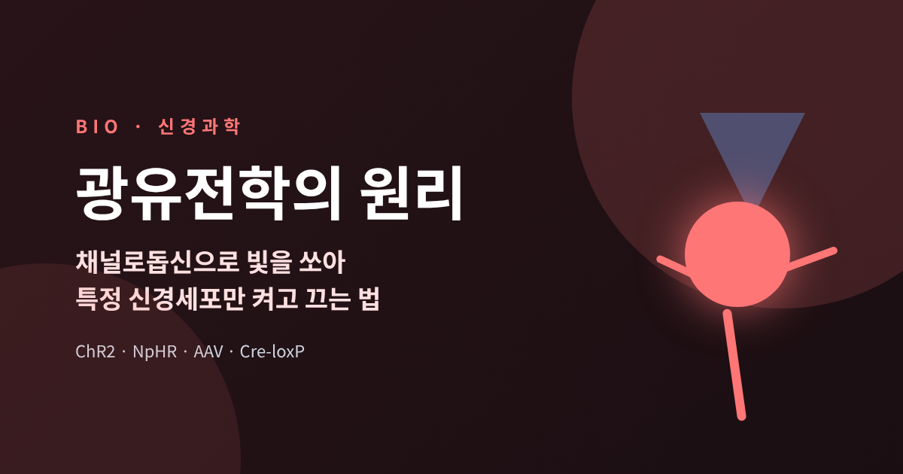
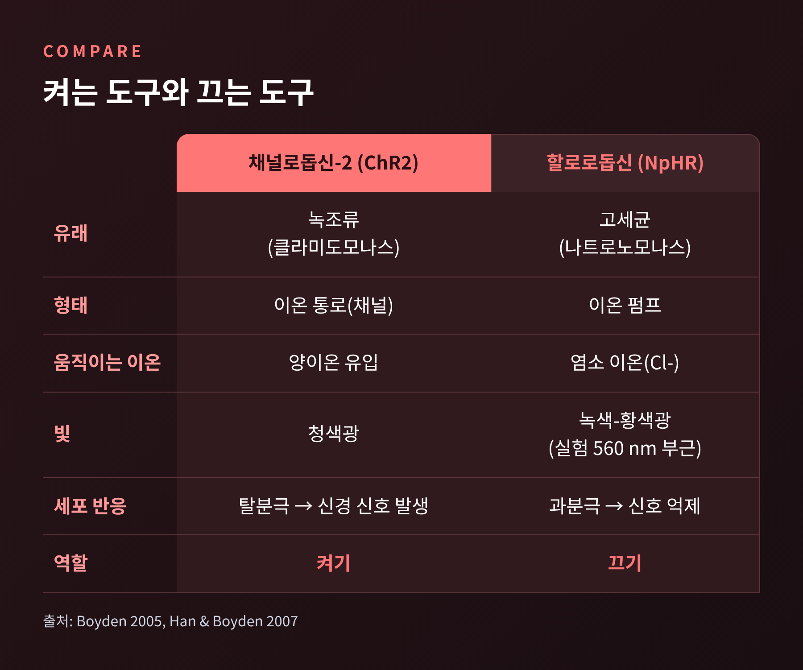
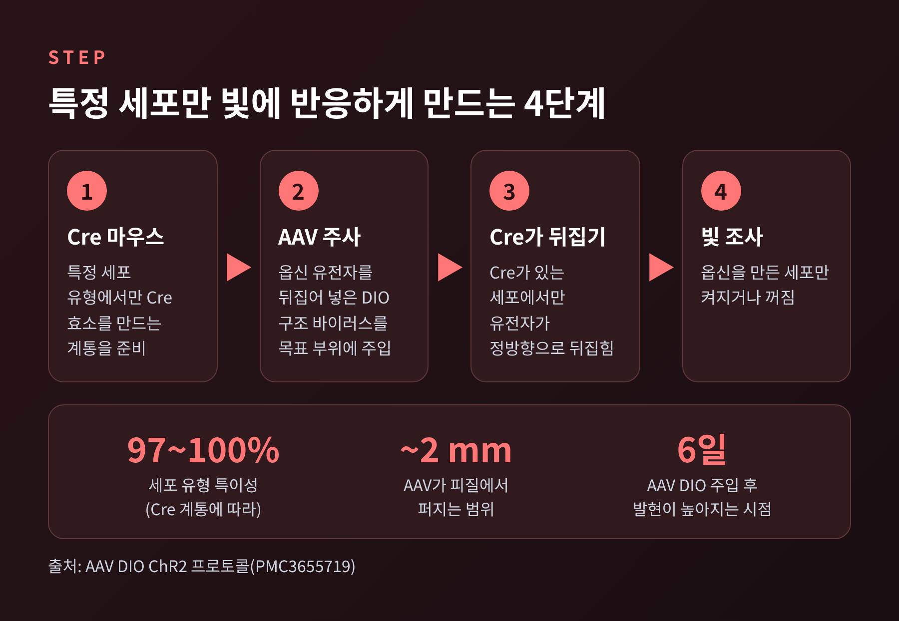
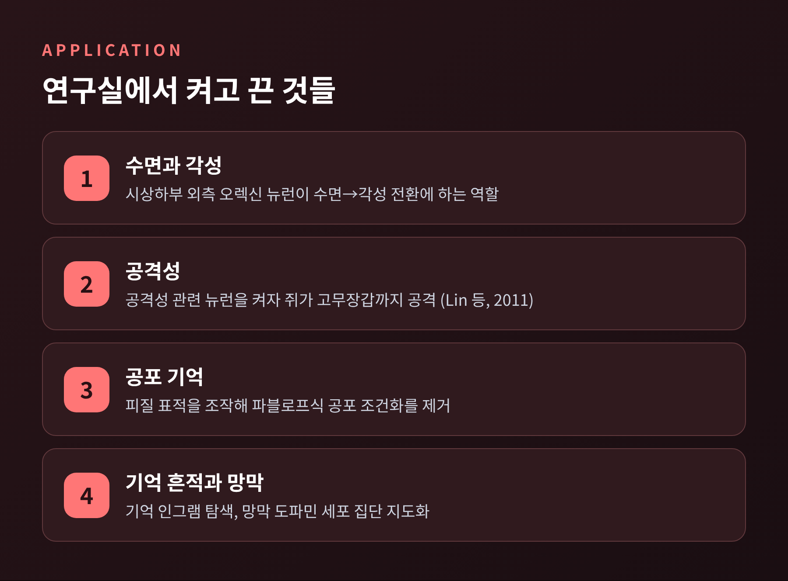
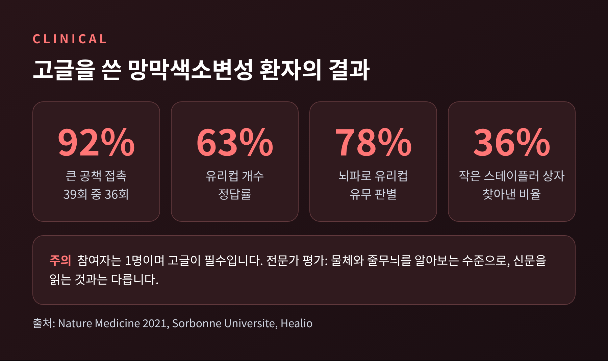
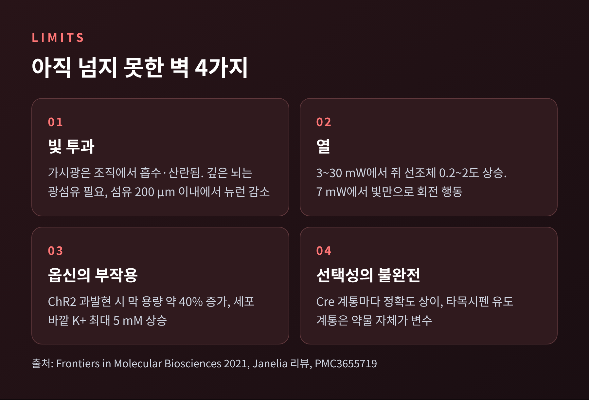

광유전학의 원리, 채널로돕신으로 빛을 쏘아 특정 신경세포만 켜고 끄는 법

오늘은 광유전학의 원리를 정리해 보려 합니다.
빛에 반응하는 단백질의 유전자를 특정 신경세포에만 넣고, 그 세포에 빛을 쏘아 활동을 켜고 끄는 기술입니다.
2026년 10월 노벨 생리의학상이 이 분야에 돌아갔기에, 핵심 원리와 쓰임, 그리고 한계를 차례로 짚어 보겠습니다.
■ 노벨상이 가리킨 기술
2026년 10월 5일, 노벨위원회는 올해의 생리의학상 수상자로 칼 다이서로스(Karl Deisseroth, 스탠퍼드대), 페터 헤게만(Peter Hegemann, 훔볼트대), 게오르크 나겔(Georg Nagel, 뷔르츠부르크대)을 발표했습니다.
수상 사유는 빛으로 여닫는 이온 통로와 광유전학에 관한 발견입니다.
노벨위원회는 이 방법이 살아 있는 뇌에서 개별 신경세포의 활동을 켜고 끌 수 있게 해 준다고 설명했습니다.
예전엔 뇌 연구의 도구가 전기 자극이었습니다. 전극 주변의 세포가 종류를 가리지 않고 한꺼번에 반응합니다.
지금은 다릅니다. 원하는 종류의 세포에만 빛 스위치를 달 수 있습니다.
이 아이디어는 새롭지 않았습니다. 프랜시스 크릭이 빛으로 특정 유형의 뉴런만 조절한다는 상상을 내놓았지만, 스스로 "다소 억지스럽다"고 평가했다고 전해집니다.
그 상상이 현실이 된 열쇠는 뇌가 아니라 연못의 조류에게 있었습니다.
■ 켜는 스위치, 채널로돕신
채널로돕신은 단세포 녹조류 클라미도모나스의 표면에 있는 단백질입니다.
빛 에너지를 받으면 막을 가로지르는 이온의 흐름으로 곧바로 바꿔 줍니다. 빛을 받는 부분과 이온이 지나는 통로가 한 단백질 안에 같이 들어 있는 셈입니다.
헤게만 연구실이 처음 찾아낸 것이 채널로돕신-1입니다. 그 뒤 나겔 팀이 보고한 채널로돕신-2(ChR2)는 청색 쪽 빛에 반응하는 양이온 통로였습니다.
원리는 단순합니다.
청색광이 닿으면 통로가 열리고, 양이온이 세포 안으로 들어옵니다. 세포막의 전위가 올라가 문턱을 넘으면 활동전위, 곧 신경 신호가 발생합니다.
빛을 끄면 통로가 닫힙니다.
이 단백질을 포유류 신경세포에서 실제로 쓴 것이 2005년 《Nature Neuroscience》에 실린 논문입니다.
보이든(Boyden), 장펑(Zhang), 밤베르크(Bamberg), 나겔, 다이서로스가 함께 쓴 이 논문에서, 렌티바이러스로 ChR2 유전자를 신경세포에 전달하고 빛을 빠르게 켜고 끄는 것만으로 스파이크와 시냅스 전달을 밀리초 단위로 조절했습니다.
2004년에 포유류 뉴런에서 작동함이 확인되었고, 2007년에는 살아 있는 쥐의 뇌로 무대가 옮겨졌습니다. 시상하부의 오렉신 뉴런이 수면에서 각성으로 넘어가는 데 하는 역할을 이 방식으로 들여다본 연구가 대표적입니다.
■ 끄는 스위치, 할로로돕신
켜기만 있어서는 절반입니다. 신경회로를 이해하려면 끄는 도구도 필요합니다.
그 역할을 한 것이 고세균 나트로노모나스 파라오니스에서 온 할로로돕신(NpHR)입니다.
채널로돕신이 문을 여는 방식이라면, 할로로돕신은 이온을 퍼 나르는 펌프입니다. 빛을 받으면 염소 이온을 세포 안으로 밀어 넣어 막전위를 더 낮춥니다. 신호가 나오기 어려운 상태가 됩니다.
2007년 한(Han)과 보이든의 연구에서 수치가 확인됩니다.
황색광(실험은 560 nm 부근, 약 10 mW/mm²)을 쏘자 최대 과분극이 평균 32.9 mV에 달했고, 광전류는 평균 88.7 pA였습니다.
빛이 켜진 동안 신경세포가 발화한 비율은 약 1.2%였고, 어둠 속에서는 98.7%였습니다. 빛을 끄면 원래대로 돌아오는 가역적 억제입니다.
발현 뉴런의 휴지전위와 세포 생존에는 차이가 없었다고 보고되었습니다.
두 도구를 한 세포에 함께 넣으면 청색광으로는 켜고, 다른 색 빛으로는 끄는 양방향 제어가 가능해집니다.

■ 특정 세포만 고르는 법
여기서 한 가지 의문이 생깁니다.
빛은 뇌 조직 속 모든 세포에 닿습니다. 그런데 어떻게 한 종류의 세포만 반응할까요.
답은 빛이 아니라 유전자에 있습니다. 옵신 유전자가 발현되는 세포만 빛에 반응합니다. 그래서 선택은 유전자를 어디에 넣느냐의 문제가 됩니다.
대표적인 방식이 바이러스 벡터와 Cre-loxP를 결합한 전략입니다.
- 특정 세포 유형에서만 Cre라는 효소를 만드는 마우스(Cre 계통)를 준비합니다.
- 옵신 유전자를 거꾸로 뒤집은 상태로 넣은 AAV(아데노연관바이러스)를 뇌의 목표 부위에 주사합니다. 이를 DIO 구조라고 합니다.
- 바이러스는 여러 세포에 들어가지만, Cre가 있는 세포에서만 유전자가 바로 뒤집어집니다.
- 정방향이 된 세포에서만 옵신이 만들어지고, 그 세포만 빛에 반응합니다.
AAV는 가장 널리 쓰이는 전달 수단으로, 피질에서 최대 2 mm가량 퍼지며 발현량이 높다고 알려져 있습니다.
렌티바이러스는 퍼지는 범위가 좁고 흥분성 뉴런을 선호해서, 억제성 개재뉴런을 노릴 때는 적합하지 않을 수 있습니다.
주입 후 6일 만에 발현이 높아지고, 수개월 유지되었다는 보고가 있습니다.
프로토콜에서 보고된 세포 유형 특이성은 Cre 계통에 따라 97~100%입니다.
Cre가 없는 마우스에 같은 바이러스를 넣으면 발현이 없어야 하며, 이것이 대조 실험이 됩니다.
프로모터로 직접 고르는 방법도 있습니다. 세포 유형 고유의 프로모터를 바이러스에 실어 보내는 방식입니다.
다만 작은 프로모터 조각은 발현이 충분하지 않을 수 있고, 아직 밝혀지지 않았거나 바이러스에 담기엔 너무 큰 프로모터도 많습니다. 그래서 강한 범용 프로모터(EF1α)에 Cre 계통으로 선택성을 맡기는 방식이 흔히 쓰입니다.

■ 연구실에서 달라진 것
이 기술은 어떤 세포가 어떤 행동을 만드는지 묻는 방식을 바꾸었습니다.
관찰하는 데 머물던 연구가, 세포를 켜고 끄며 결과를 보는 인과 실험이 된 것입니다.
- 수면: 시상하부 외측의 오렉신 뉴런이 수면에서 각성으로 넘어가는 순간을 직접 조절했습니다.
- 공격성: 2011년 린(Lin) 등의 연구에서 수컷 쥐의 공격성 관련 뉴런을 켜자, 근처의 고무장갑 같은 물체까지 공격했습니다.
- 공포 기억: 자유롭게 움직이는 쥐에서 피질의 표적을 조작해 파블로프식 공포 조건화를 없앤 실험이 있습니다.
- 기억 흔적과 망막: 기억 인그램을 찾는 연구, 망막의 도파민 세포 집단을 지도화하는 연구에도 쓰입니다.
신경 바깥으로도 번졌습니다. 골격근, 심장, 면역세포, 배아줄기세포 연구에도 활용된다고 합니다.

■ 치료의 문턱, 망막
치료에서 가장 앞선 사례는 눈입니다.
망막색소변성은 빛을 받아들이는 광수용체가 차츰 사라지는 유전 질환입니다. 하지만 그 뒤에 있는 망막 신경절세포는 남아 있는 경우가 많습니다.
이 세포에 빛 감지 능력을 새로 주자는 발상입니다.
2021년 5월 《Nature Medicine》에 보고된 사례는 이렇습니다.
환자 한 명에게 적색 쪽으로 치우친 채널로돕신인 ChrimsonR 유전자를 AAV로 눈 안에 주사했습니다. 최대 반응 파장은 약 590 nm의 호박색 빛입니다. 청색광보다 망막 세포에 안전하다고 평가됩니다.
이후 카메라가 달린 고글이 영상을 호박색 빛 패턴으로 바꿔 망막에 쏘았습니다.
결과는 이렇습니다.
고글을 쓰면 물체를 찾고, 만지고, 셀 수 있었습니다. 고글이 없으면 불가능했습니다.
큰 공책은 39번 중 36번(92%) 만졌고, 유리컵 개수는 63%를 맞혔으며, 뇌파 분석으로는 유리컵의 유무를 78% 정확도로 가려냈습니다. 작은 스테이플러 상자는 36%에 그쳤습니다.
환자는 주사 뒤 수개월이 지나 훈련을 시작했고, 훈련 시작 약 7개월 뒤에 시각 개선을 보고했습니다.
이 결과를 어디까지 받아들일지는 신중해야 합니다.
참여자는 한 명뿐이었습니다. 한 전문가는 탁자 위 물체와 길 위의 줄무늬를 알아보는 수준이며 "신문을 읽는 것과는 다르다"고 평했습니다.
ChrimsonR는 자연 광수용체보다 빛 감도가 훨씬 낮아 고글이 필수이고, 모든 신경절세포를 감광하면 망막 고유의 정보 처리가 사라질 수 있다는 지적도 있습니다. 바이러스 벡터에 따른 염증 위험도 있습니다.
그럼에도 방향은 분명합니다. 노벨위원회 측에서는 이제 시작일 뿐이라고 말했습니다. 전기 자극보다 청신경을 정밀하게 자극하는 인공와우 같은 응용도 기대 단계에서 거론됩니다.

■ 아직 넘지 못한 벽
이 기술에도 좋은 점만 있는 것은 아닙니다. 한계를 정리하면 다음과 같습니다.
첫째, 빛이 깊이 들어가지 못합니다.
가시광은 조직에서 강하게 흡수되고 산란됩니다. 깊은 뇌의 세포를 켜려면 광섬유를 심어야 하는데, 이식한 섬유 200 μm 이내에서 뉴런 수가 유의하게 줄었다는 보고가 있습니다.
긴 파장의 근적외선이 잘 투과하지만, 아직은 효율이 낮습니다. 976 nm 입력 에너지 중 약 5 mm 깊이에 닿은 것은 0.6%에 그쳤습니다.
둘째, 열입니다.
3~30 mW의 빛이 쥐의 선조체 온도를 0.2~2도 올렸고, 7 mW에서는 옵신이 없어도 빛만으로 회전 행동이 나타났다고 합니다. 빛 자체가 실험을 흔들 수 있다는 뜻입니다.
지속 조사에서는 약 100 mW/mm²를 넘으면 조직이 손상될 수 있고, 스파이크를 일으키는 데는 약 75 mW/mm² 미만의 펄스로 충분하다고 알려져 있습니다.
셋째, 옵신 자체의 부작용입니다.
ChR2를 많이 발현시키면 막 용량이 약 40% 늘었고, 자극 때 세포 바깥 칼륨 농도가 최대 5 mM 올랐습니다. 4주 넘게 발현시키면 축삭 줄기가 커졌다는 보고도 있습니다.
넷째, 선택성의 불완전함입니다.
Cre 계통마다 Cre가 발현되는 정확도가 달라 혼합 집단에서 발현될 수 있습니다. 타목시펜으로 켜는 계통은 약물 자체가 행동에 영향을 줄 수 있습니다.
마지막으로 시간 척도의 차이가 남습니다. 유전자 조작은 며칠에서 수개월이 걸리지만, 신경 활동은 밀리초 단위로 움직입니다.
연구자들은 가능한 한 낮은 강도와 긴 파장을 쓰라고 권합니다.

정리하면 이렇습니다.
광유전학은 빛, 단백질, 유전자 전달이라는 세 요소를 이어 붙인 기술입니다. 조류의 채널로돕신이 켜고, 고세균의 할로로돕신이 끄고, 바이러스와 Cre가 어느 세포인지를 정합니다.
결국 남는 것은 하나입니다.
"빛은 어디에나 닿지만, 반응하는 것은 유전자를 받은 세포뿐이다."
연못의 녹조류가 빛을 느끼려고 지닌 단백질이 사람의 시력을 되찾는 시도에까지 이르렀습니다. 이 기술이 앞으로 어디까지 갈지는 위의 한계를 얼마나 넘느냐에 달려 있다고 생각합니다.